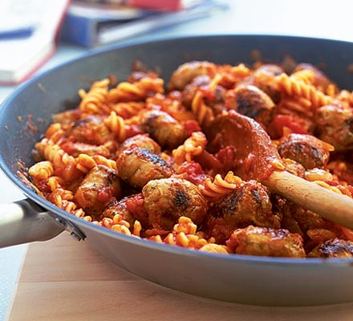

Sausage Pasta Recipe

Recipe details
This delicious pasta recipes combines the salty flavour of your favourite selected sausage with aromatic hints of coriander and a good helping of fresh plum tomatoes.
Ingredients
- 1 tbsp olive oil
- packet of 8 of your favourite sausages
- 1 large onion, diced
- 2 garlic cloves, crushed
- 1 tsp chilli powder
- 400g can chopped plum tomatoes
- 300g short pasta (e.g. fusilli)
Steps:
- Put a large pan of water on to boil.
- Heat 1 tbsp olive oil in a large frying pan and fry chunky pieces of 8 pork sausages on a fairly high heat until they are golden brown all over.
- Now turn the heat down and add 1 large chopped onion and 2 crushed garlic cloves, cooking them until they have softened.
- Stir in 1 tsp chilli powder and 400g chopped tomatoes with the sausages, bring the sauce to the boil then turn the heat down and let it bubble for about 10 minutes while you cook the pasta.
- Drop 300g pasta into the pan of boiling water and cook according to the pack instructions.
- Drain the pasta, then tip it into the frying pan with the sausage sauce, mixing well to coat. Dish up immediately with crusty bread.